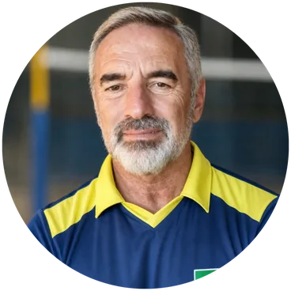
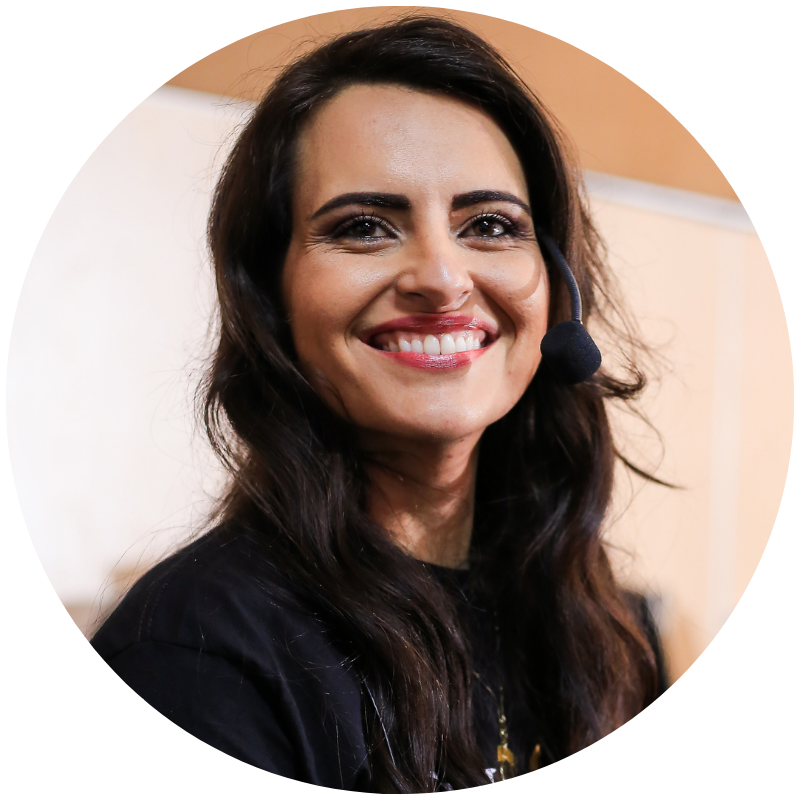

Congresso de Psicologia Aplicada ao Esporte
Um dia inteiro de conteúdo prático com quem realmente atua no treinamento mental de atletas no Brasil.
O congresso que reúne profissionais, pesquisadores e referências da psicologia do esporte em São Paulo — com palestras aplicáveis, trocas reais entre pares e conteúdo que você não encontra em formação tradicional. Das 10h às 18h, presencial, com vagas limitadas.
O que vai acontecer no dia
Cada palestra foi pensada para entregar conteúdo que você aplica na segunda-feira. Sem teoria solta — profissionais que vivem o mercado compartilhando o que funciona.


Os horários e palestrantes são preliminares e podem ser ajustados conforme confirmação dos convidados.
Se você trabalha — ou quer trabalhar — com o lado mental do esporte, esse congresso é pra você.
Instituto Atleta Campeão
Referência em psicologia do esporte, neurociência e treinamento mental desde 2016.
Fundado em 2016 nos Estados Unidos e expandido para o Brasil em 2017, o Atleta Campeão se tornou a maior referência nacional em treinamento mental e emocional para atletas. Reúne formações em neurociência e psicologia aplicada ao esporte — e já impactou mais de 30 mil atletas de diferentes modalidades, do amador ao campeão mundial.
Pinheiros, São Paulo

Espaço com fácil acesso por transporte público e opções de estacionamento próximo.
Tudo o que está incluso na sua vaga
Um dia inteiro de congresso presencial em São Paulo com os principais nomes da psicologia aplicada ao esporte — por um investimento único.
Vagas limitadas pela capacidade do espaço.